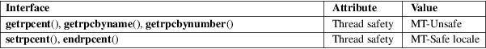

getrpcent, getrpcbyname, getrpcbynumber, setrpcent, endrpcent − get RPC entry
Standard C library (libc, −lc)
#include <netdb.h>
struct rpcent *getrpcent(void);
struct
rpcent *getrpcbyname(const char *name);
struct rpcent *getrpcbynumber(int
number);
void
setrpcent(int stayopen);
void endrpcent(void);
The getrpcent(), getrpcbyname(), and getrpcbynumber() functions each return a pointer to an object with the following structure containing the broken-out fields of an entry in the RPC program number data base.
struct rpcent {
char *r_name; /* name of server for this RPC program */
char **r_aliases; /* alias list */
long r_number; /* RPC program number */
};
The members of this structure are:
|
r_name |
The name of the server for this RPC program. |
r_aliases
A NULL-terminated list of alternate names for the RPC program.
r_number
The RPC program number for this service.
The getrpcent() function reads the next entry from the database. A connection is opened to the database if necessary.
The setrpcent() function opens a connection to the database, and sets the next entry to the first entry. If stayopen is nonzero, then the connection to the database will not be closed between calls to one of the getrpc*() functions.
The endrpcent() function closes the connection to the database.
The getrpcbyname() and getrpcbynumber() functions sequentially search from the beginning of the file until a matching RPC program name or program number is found, or until end-of-file is encountered.
On success, getrpcent(), getrpcbyname(), and getrpcbynumber() return a pointer to a statically allocated rpcent structure. NULL is returned on EOF or error.
/etc/rpc
RPC program number database.
For an explanation of the terms used in this section, see attributes(7).

BSD.
BSD, Solaris.
All information is contained in a static area so it must be copied if it is to be saved.
getrpcent_r(3), rpc(5), rpcinfo(8), ypserv(8)